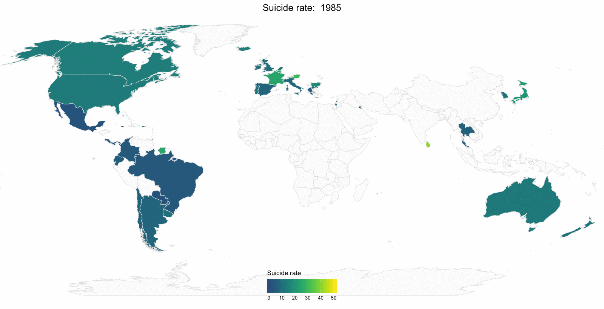
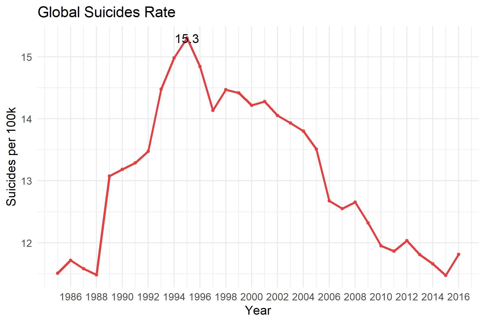
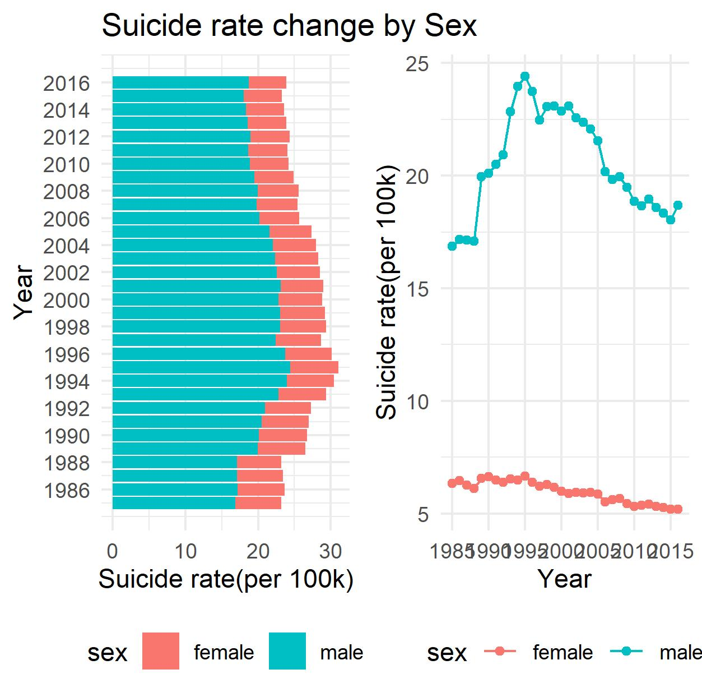
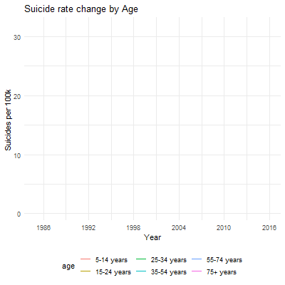

According to WHO, about 800,000 people died by suicide in 2016, of which 79% occurred in low- and middle-income countries. Overall, suicide accounts for 1.4% of all deaths worldwide, and has become the second leading cause of death among 15-29 age group.
World Suicide Change map

Findings
-
In the time period, most countries’s suicide rates didn’t have dramatic change.
-
In Russia, an obvious change in suicide rate can be observed. From 1990 to 1999, an increase was shown, as the color got lighter. From 2010-2016, there was a noticable decrease, with heavier color showing up.
-
The suicide rate in Sourth American stayed in low position during 1985-2016
World Total Suicide Change

Findings
-
From 1985-1995, the suicide rate soared dramatically, inceasing by more 3 per 100k people
-
The peak was in 1995, 15.3 per 100k people
-
After 1995, an obvious and persistent decrease happened, with occasional rise in this period
World Total Suicide Change by Gender

Findings
-
In males, the suicide rate fluctuated a lot. From 1985-1995, the rate increased largely and peacked around 25 death per 100k at 1995. After 1996, a steady decrease ocurred.
-
In female, a very slight decrease was observed during the time
-
The rate in male was about 3 times higher than rate in female
World Total Suicide Change by Age

Findings
-
Trend in 15-74 years were largely consistant.
-
In 75+ age group, the decrease happened all the time, from 30 death per 100k to 21 death per 100k.
-
Generally, the 75+ group had highest suicide rate, while 5-14 age group had lowest rate all the time.
Average Suicide Rate Ranking by Country
The bar chart shows top 40 countries with high average suicida rate from 2010-2016
Findings
-
The country with highest suiciate rate is Lithuania, with more than 30 death per 100 k people
-
America ranks around 23th, with around 15 death per 100k people, inciding a not optimistic situation